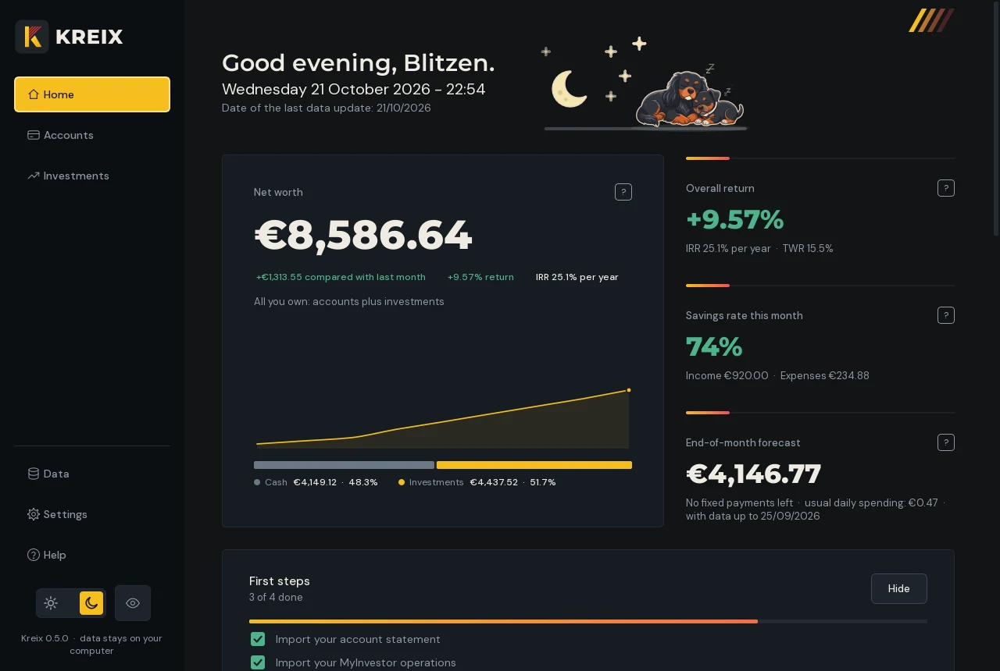
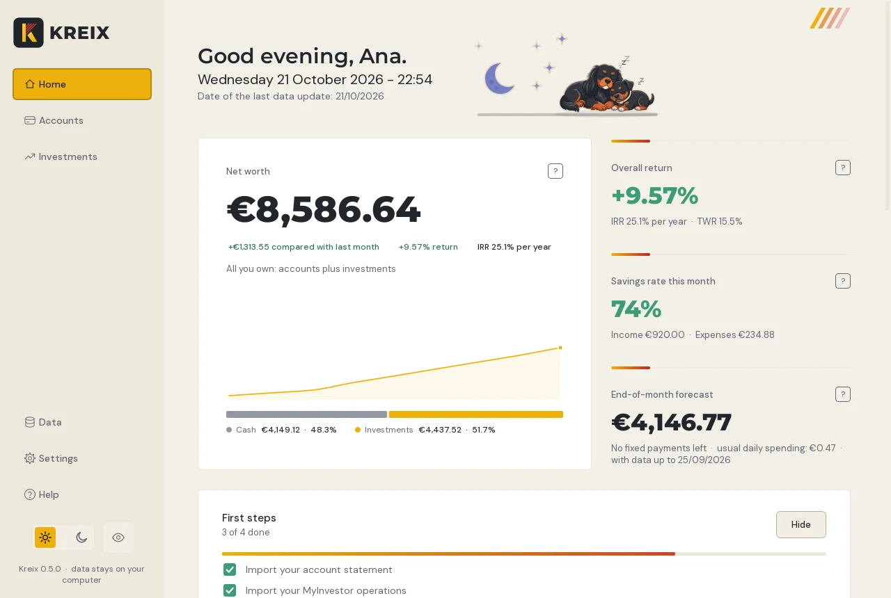
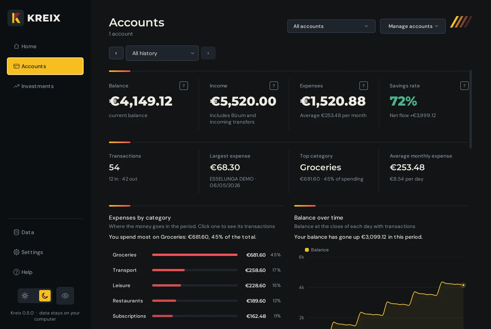
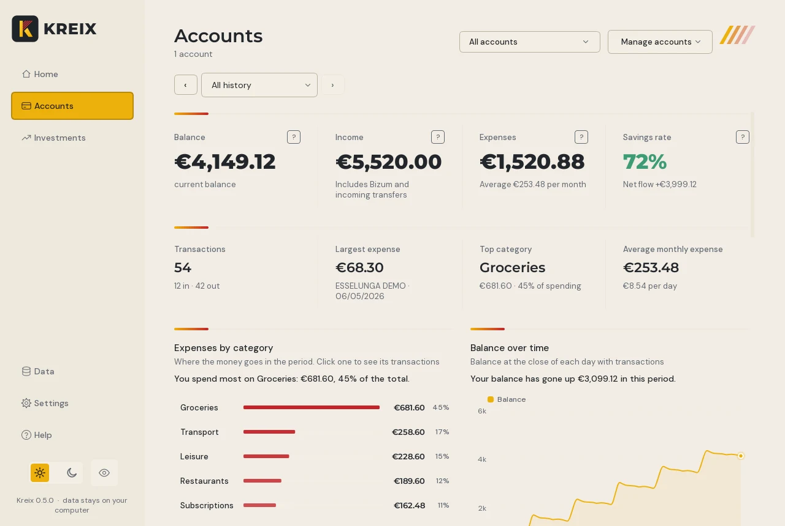
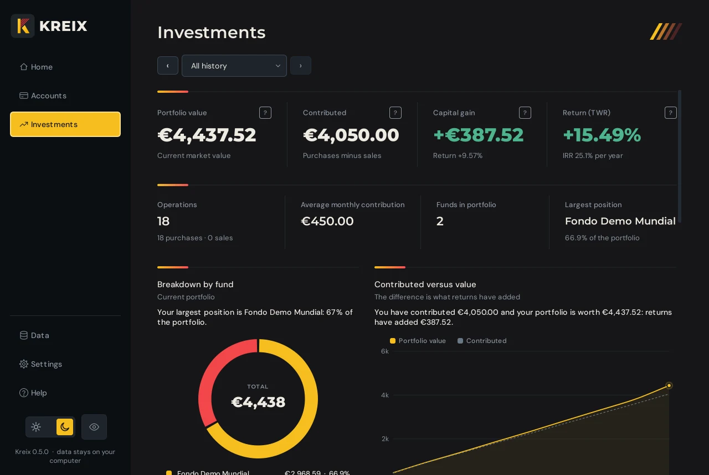
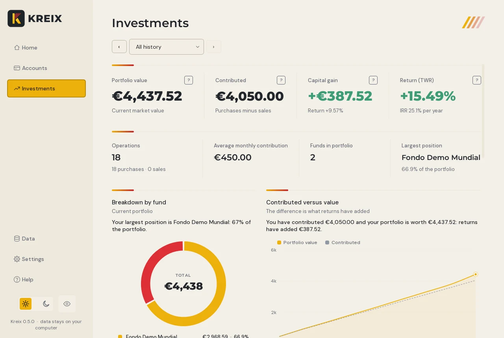
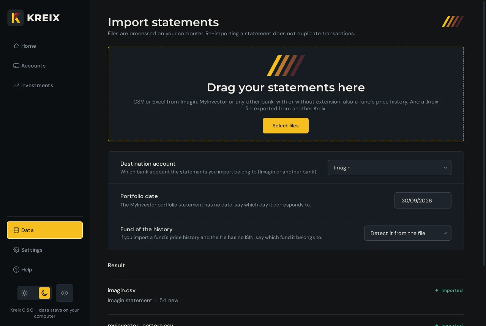
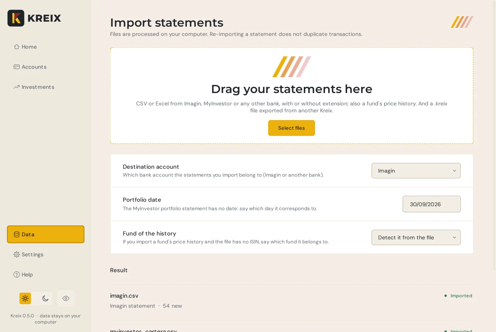
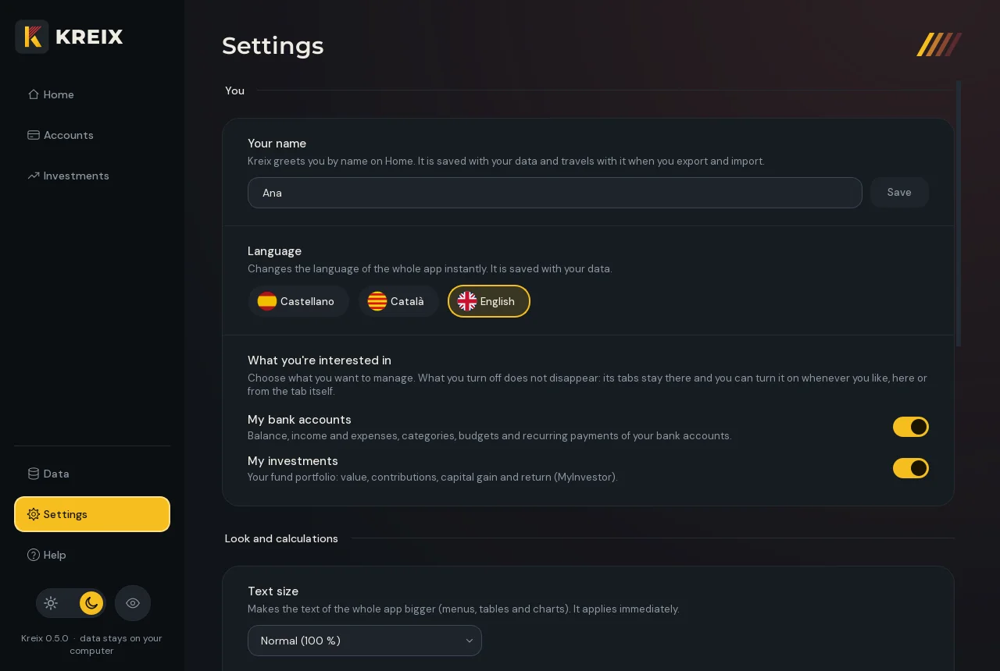
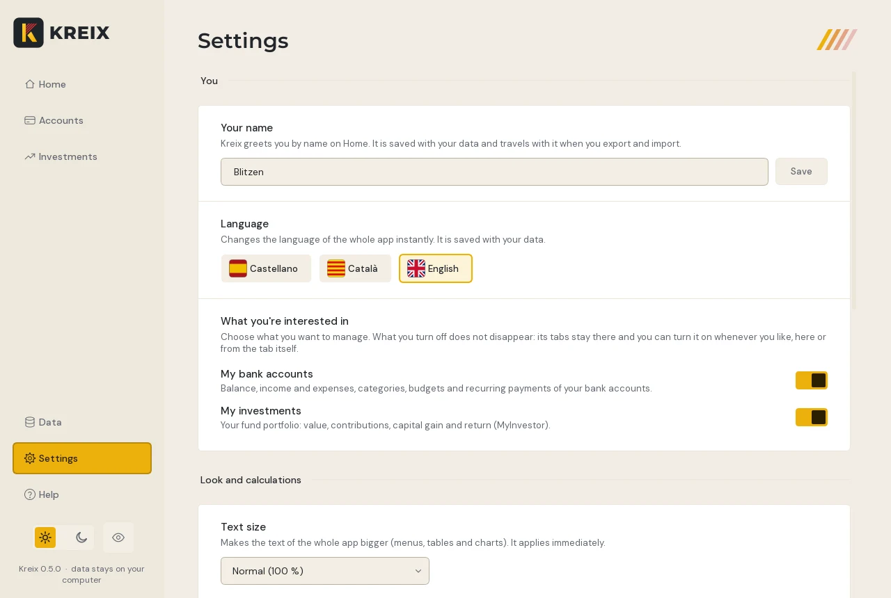

Kreix never asks for your bank login details.
The personal finance app for Windows that does not watch you: it works offline and keeps everything encrypted on your computer.
Version 0.5.0 for Windows 10 and 11 (64-bit). If Windows warns you when you open it, that is because the installer is not signed yet: click “More info” and then “Run anyway”.
No bank login details
You download the statement and drop it into Kreix. Kreix never logs in to your bank and never stores your login details.
100% offline
It never connects to the internet: not to update itself, not to send anything. No account, no cloud, no ads and no telemetry.
Your data, encrypted
Everything Kreix stores is encrypted with your master password. Without it, nobody can read it, not even us. Exports can be encrypted too.


Why Kreix
Four design decisions, and none of them is negotiable.
It never watches you
No account, no cloud and no telemetry. Nobody knows how much you earn or what you spend it on, not even us. Check it yourself: it works the same without internet.
Security with no shortcuts
Everything it stores is encrypted with your master password. It is decrypted only in memory, locks itself when you are not using it and, without your password, there is no way to open it.
Your money, in plain sight
Net worth, savings this month, end-of-month forecast, budgets, recurring payments and investments. Home sums it all up on a single screen.
Easy from the first minute
You drop your bank statement in and that is it. No linking accounts, nothing to set up. If your bank is not on the list, Kreix asks you once which column is which and remembers it.
Start in three steps
Without linking accounts or giving anyone access: just a file you can already download from your bank.
-
Download the statement
From your bank's website or app, as CSV or Excel. It is the same file you would download to keep.
-
Drop it into Kreix
Drag it onto Import. Kreix shows you what it read and saves nothing until you press Import. If you import the same statement again, Kreix does not duplicate transactions.
-
See your money
Home summarises your net worth, your savings this month and what is coming. Accounts and Investments give the detail.
The guide, screen by screen
Each tab in the sidebar, in a few words. The data in the screenshots is made up.
Everything important at a glance
- Your net worth, your return and this month's savings rate.
- A forecast of how much money you will have at the end of the month, counting your fixed payments.
- Upcoming payments, budgets and the transactions that have no category yet.
Your spending, made clear
- Spending by category and balance over time, for one month or the whole history.
- Change a transaction's category with a right click, or create your own rules.
- Budgets by category and detected recurring payments.


Your fund portfolio
- Portfolio value, amount contributed, gain and return.
- Breakdown by fund and growth compared with what you have contributed.
- It is built from the orders and the portfolio you export from MyInvestor.


Drop and review
- Drag your bank's CSV or Excel files onto the import area.
- You see what was read before saving, and almost everything can be undone.
- If Kreix does not recognise the file, it asks you which column is which and remembers it.


Your way
- Spanish, Catalan or English, switching instantly.
- Light or dark theme, text size and an animated sky on Home.
- Password, automatic lock and encrypted backups.


An eye for when someone looks over your shoulder
With one click, or Ctrl+H, Kreix blurs every amount, in figures, tables and charts. You can tell there is a number, but not which one. Try it.
Automatic categories
Kreix sorts your spending by itself, and your rules take priority over its own.
Recurring payments
It detects subscriptions and bills, and tells you when the next one is due. You remove the ones you no longer pay.
Almost everything can be undone
Every important change shows a notice with an Undo button.
Your data never leaves your computer
You do not have to trust a promise: Kreix is built so that it has nothing to send and nowhere to send it.
-
No network
Kreix has no features that use the internet: it does not update itself, send data or track how you use it.
-
Real encryption
Your data is encrypted with AES and a key derived from your password (PBKDF2-SHA256 with 600,000 iterations). If anyone tampers with the file, it will no longer open.
-
Nothing unencrypted on disk
When you open Kreix, your data is decrypted only in memory. No unencrypted temporary files are written.
-
Only you hold the password
Nobody else has it. That is why, if you forget it, nothing can be recovered: you would have to start from scratch.
Check it yourself
- Disconnect Wi-Fi or the network cable.
- Open Kreix and use it as usual: import, look at your charts, change categories. Everything works the same, because it never needed a connection.
For extra assurance, create an outbound rule in Windows Firewall that blocks Kreix and check that it keeps working.
Good to know
The file that Export creates (.kreix) can be encrypted with your password, but that is optional. If you do not encrypt it, keep it somewhere safe. And write down your master password somewhere safe: if you lose it, there is no way to recover your data.
Works with your bank
Kreix reads CSV and Excel (.xlsx and the older .xls). It recognises these formats by their usual columns.
- Imagin
- MyInvestor
- CaixaBank
- Santander
- Revolut
- Trade Republic
- Any other bank
If Kreix does not recognise a file, it shows you the first rows and asks which column is the date, the description and the amount. It remembers for next time. The CaixaBank, Santander, Revolut and Trade Republic formats are included but still being tested.
Frequently asked questions
Does Kreix need my login details or access to my bank?
No, never. Kreix does not connect to your bank. It works with the statements you download yourself.
Does it connect to the internet?
No. It works exactly the same offline, and it has nothing to send information outside your computer.
Where is my data stored?
In an encrypted file inside your application data folder (on Windows, %APPDATA%\Kreix). It is only decrypted in memory while Kreix is open.
What happens if I forget the password?
It cannot be recovered: there is no spare key, which is why nobody else can read your data. You can start from scratch with a new password. Keep backups and write the password down somewhere safe.
What happens if I import the same statement twice?
Nothing: Kreix recognises the transactions it already has and does not duplicate them.
Can I take my data to another computer?
Yes. Export creates a .kreix file that you drop into Import on the other computer. You can encrypt it with your password. Importing it replaces any data that was there.
Can I undo a change?
Almost every important change shows a notice with an Undo button: imports, category changes, new rules, budgets and deletions.
Which languages is it available in?
Spanish, Catalan and English. You choose when you first open it and can change it at any time in Settings.
Does it work on Mac or on a phone?
For now, only on Windows. A phone version is being considered.
How do I install it?
Download the installer and open it. It does not ask for administrator rights and it adds a shortcut to Start and to the desktop. Because the installer is not signed yet, Windows may warn you the first time: click “More info” and then “Run anyway”.
Your money, your computer, your rules.
Kreix for Windows is ready to download. This page will stay the guide. No account, no sign-up and no connection.
Download for Windows